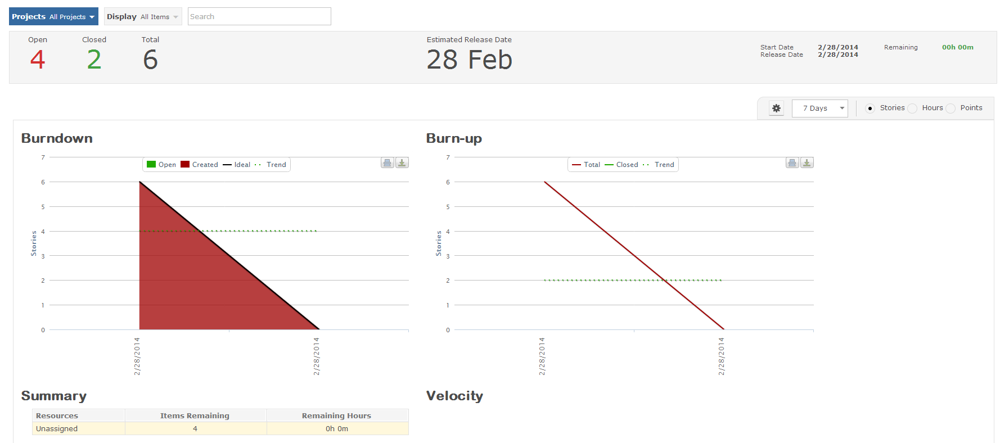

You can utilize the Progress app to display valuable information for completetion estimates, and work performed ratios.
NoteUser permissions may prevent you from viewing progress window.

The burndown, and burnup, chart display the progress of how many items have been closed, and work that have been added, in relation to the product release. The burndown/burnup charts in Gemini are adaptable to any workspace, and display data from the most recent workspace viewed.
Beyond item tracking, the charts can also display information for time logged and also provides a point-system display.